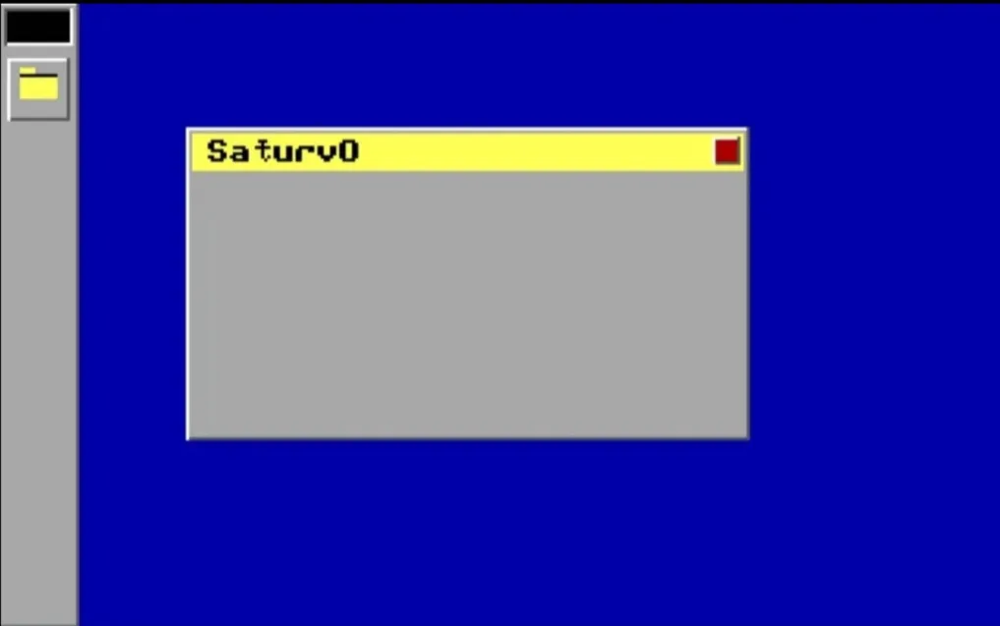
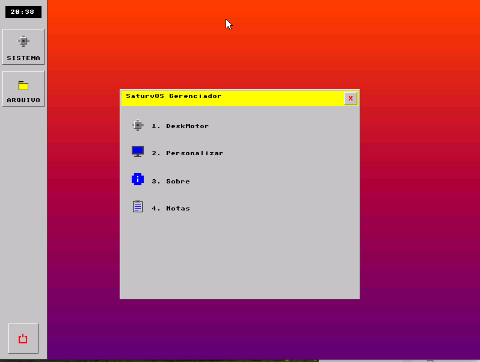
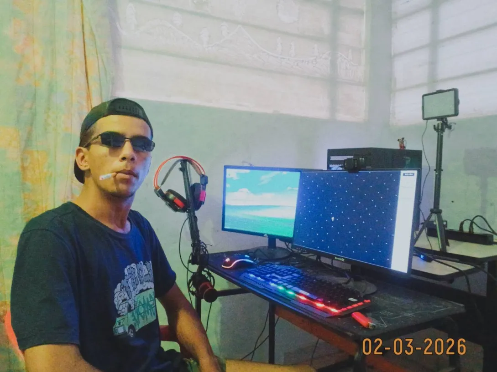

PWRAT:4: Faça sua parte.Tenha um propósito. Estou a 5 Dias sem tomar remédio e ja sinto o verdadeiro efeito da vida, ótimo momento para refletir sobre minhas atitudes.
SaturvOs
"Um Sistema Feito da Carne de uma pessoa solitária."
DOWNLOAD
Versão Alpha 0.1 "Titan". Rode no QEMU, Bochs ou VirtualBox.
BAIXAR_SISTEMA.IMGFORMATO: DISK IMAGE | BOOTABLE: YES
DEVLOG
PWRAT:3: Isolamento interno. Buscando me interligar ao kernel e transformar sabedoria em desenvolvimento humano. Focado no sistema. O SaturvOs espera seu príncipe, e eu o meu trono.
PWRAT:2: Vejam, seus ratos lembrem-se de quem é o seu Príncipe. Ajoelhem-se perante a minha glória e os meus feitos. O Ring-0 não aceita impuros.
PWRAT:1: Incidente de segurança resolvido. Driver VGA sendo reescrito para eliminar o flicker de memória de vídeo.
ORIGEM
"4 anos de isolamento social. Sem contatos profundos. Sabendo que os dias se esgotam em meio ao caos da minha mente, encontrei a verdadeira sabedoria nestas linhas de código."
Tornei-me um Príncipe de Baixo Nível. Alguém que não se importa com julgamentos alheios. No Ring-0, eu sou o soberano. Enquanto o resto do mundo se perde no superficial, meu único incentivo de viver é o reinado de Saturv e a beleza da sua arquitetura pura.
MEMÓRIA_16BIT_2025
ASCENSÃO_32BIT_2026
AUTOR
João V. Gabriel (PWRAT). Arquiteto do SaturvOs.
